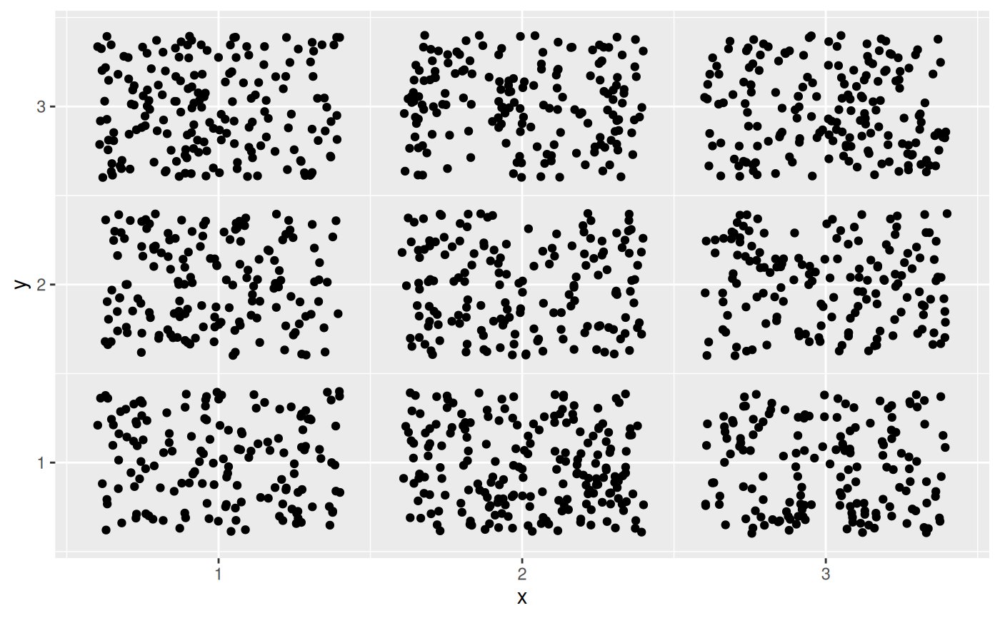
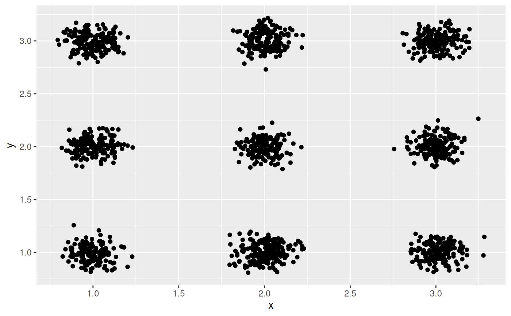
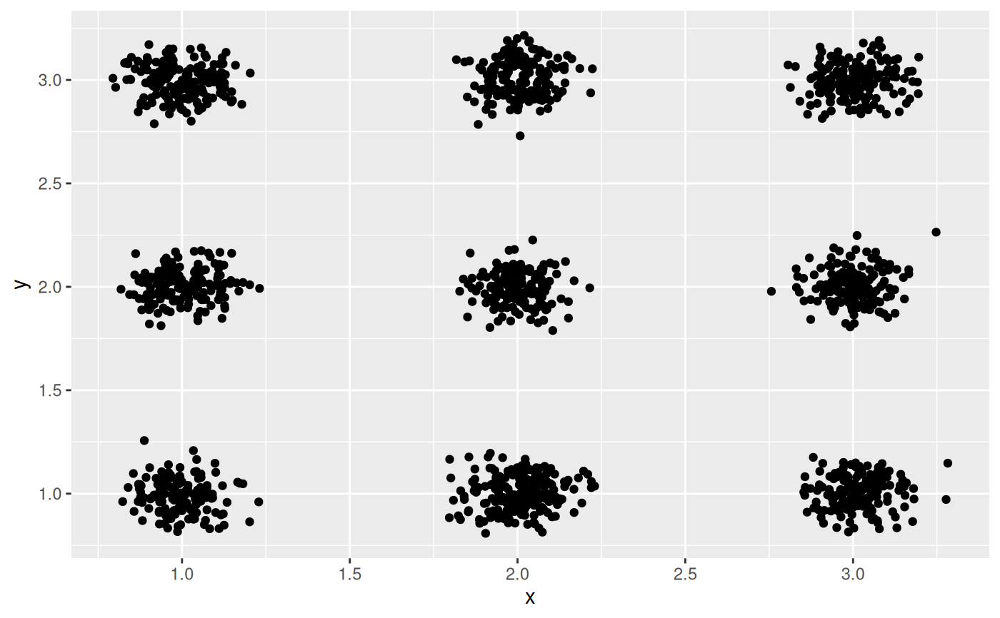

Jitter points with normally distributed random noise
Source:R/position-jitternormal.R
position_jitternormal.Rdggplot2::geom_jitter() adds random noise to points using a uniform
distribution. When many points are plotted, they appear in a rectangle. This
position jitters points using a normal distribution instead, resulting in
more circular clusters.
position_jitternormal(sd_x = NULL, sd_y = NULL, seed = NA)Arguments
- sd_x, sd_y
Standard deviation to add along the x and y axes. The function uses
stats::rnorm()withmean = 0behind the scenes.If omitted, defaults to 0.15. As with
ggplot2::geom_jitter(), categorical data is aligned on the integers, so a standard deviation of more than 0.2 will spread the data so it's not possible to see the distinction between the categories.- seed
A random seed to make the jitter reproducible. Useful if you need to apply the same jitter twice, e.g., for a point and a corresponding label. The random seed is reset after jittering. If
NA(the default value), the seed is initialised with a random value; this makes sure that two subsequent calls start with a different seed. UseNULLto use the current random seed and also avoid resetting (the behaviour of ggplot 2.2.1 and earlier).
Examples
# Example data
df <- data.frame(
x = sample(1:3, 1500, TRUE),
y = sample(1:3, 1500, TRUE)
)
# position_jitter results in rectangular clusters
ggplot(df, aes(x = x, y = y)) +
geom_point(position = position_jitter())

# geom_jitternormal results in more circular clusters
ggplot(df, aes(x = x, y = y)) +
geom_point(position = position_jitternormal())
 # You can adjust the standard deviations along both axes
# Tighter circles
ggplot(df, aes(x = x, y = y)) +
geom_point(position = position_jitternormal(sd_x = 0.08, sd_y = 0.08))

# Oblong shapes
ggplot(df, aes(x = x, y = y)) +
geom_point(position = position_jitternormal(sd_x = 0.2, sd_y = 0.08))
# You can adjust the standard deviations along both axes
# Tighter circles
ggplot(df, aes(x = x, y = y)) +
geom_point(position = position_jitternormal(sd_x = 0.08, sd_y = 0.08))

# Oblong shapes
ggplot(df, aes(x = x, y = y)) +
geom_point(position = position_jitternormal(sd_x = 0.2, sd_y = 0.08))
 # Only add random noise to one dimension
ggplot(df, aes(x = x, y = y)) +
geom_point(
position = position_jitternormal(sd_x = 0.15, sd_y = 0),
alpha = 0.1
)
# Only add random noise to one dimension
ggplot(df, aes(x = x, y = y)) +
geom_point(
position = position_jitternormal(sd_x = 0.15, sd_y = 0),
alpha = 0.1
)